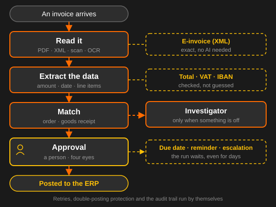
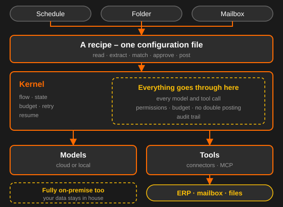

What is it?
Office Agent automates document and knowledge work in the office: documents and events come in, get read, evaluated, matched against your systems, put in front of a person for approval at the right point, and written back afterwards. What comes out is not a suggested text but a validated record with a traceable history.
- A use case is a configuration file, not a program of its own
- The model decides the content – the pipeline decides the path
- No model result passes unchecked: a validator, a threshold or a person comes first
- Every run is stored durably, survives a restart and can be explained afterwards
One use case, end to end
Invoice intake shows the principle best, because everything is in it: a document in whatever format, values that have to be right, a match against the order, an approval by a person, and a posting at the end that must happen exactly once.

The investigator on the right only comes in when the match does not add up. It may read, not write, and its result is advice for the person – never a decision. That is what keeps a non-deterministic component acceptable inside an auditable process.
Features
A recipe, not a program
A new use case is a configuration over existing building blocks – not weeks of development.
Approval where it counts
Roles, amount limits, four-eyes, due dates and escalation are part of the pipeline, not left to chance.
It holds
A run survives a restart and waits days for an approval if it has to – without losing anything.
Calculated, not guessed
Totals, VAT rules and IBAN format are checked. Whatever fails goes to a person instead of going on.
Back to the document
Every value carries its page and the passage it came from. Proposal and approval are both in the log.
Into your systems
Connectors for ERP, mailbox and file storage – native or over MCP. The model provider is configuration.
How it works
- A folder, a schedule or a mailbox starts a run
- The recipe works through its steps: read, extract, match, check
- Anything uncertain or unusual goes to a person for approval
- After that the system writes back – once, not twice
- Chain of evidence: document → values → approval → posting id
Good to know
The trick is the decomposition. The use cases look completely different from each other, but they are made of roughly a dozen recurring building blocks: read, classify, extract, match, check, score, answer, draft, approve, write back. Build those properly once and the next use case arrives as a configuration.
Fixed shell, AI at the core: the model decides the content, the pipeline decides the path. Whether an approval happens is set by the recipe – the model cannot skip it.
Can I already use Office Agent?
Office Agent is in development. The core runs and the first use case – invoice intake – is being built. Do get in touch: early pilots have a say in which modules come first.
Does it run on our own infrastructure?
Yes, on your infrastructure or in your private cloud. Single tenant, no shared services, no telemetry.
Do our documents leave the building?
Only if you choose a cloud model. The model endpoint is configurable per install – with a local model every document stays on your own hardware.
Does the AI decide about payments?
No. Whether an approval happens is set by the recipe, never by the model. Changes to bank details or payee need a separate permission and never go through automatically.
What happens if it crashes mid-run?
The run is stored durably and continues after the restart. Every write carries a key that prevents double postings; where the target system cannot support that, the system reads back or puts the case in front of a person.
What about GoBD and GDPR?
The received document is archived unchanged, extracted values are kept separately beside it. The audit log is append-only with no delete grant, and personal data hangs off a scope it can be deleted by.
Do I need a new program per use case?
No. A use case is a configuration file over existing building blocks. If it really needs new code, a building block is missing – and that is a deliberate extension, not routine work.
How it is built
Everything that costs money or has an effect – every model call, every access to a company system – goes through a single point. Permissions, budget, double-posting protection and the audit trail live there. A step cannot get around it, because it never holds a model or a tool itself.

Deliberately built without an agent framework: those libraries change fast, pull large dependency trees into an environment that has to pass a security review, and do not solve the hard parts – durable runs, approvals, traceability, connectors.
What for?
Finance
Capture and match incoming invoices, review expenses, draft dunning letters, assist bank reconciliation.
Documents
Classify and route, extract data, enter it into ERP or CRM, clean up and deduplicate master data.
Procurement
Take in requisitions, onboard supplier data, compare quotes, keep an eye on renewals and prices.
Legal & compliance
Check clauses against your standards, pull out obligations and deadlines, monitor regulatory change.
IT & support
Triage tickets, answer simple questions from the knowledge base, summarize incidents.
Admin & HR
Internal helpdesk, minutes and action items from meetings, drafting job ads, orchestrating onboarding.
Tailored to you
Office Agent is not programmed but configured – to your processes, your systems and your internal controls:
- The use case as a recipe: steps, thresholds, due dates and responsibilities are configuration
- Approval rules to your policy: roles, amount limits, four-eyes principle
- Model of your choice – in the cloud or local on your own hardware
- Connectors to your systems: native or over MCP
- Dry-run mode: every write is only simulated and recorded
- A trial run over your own historical documents – you see the hit rate before you decide
Audit-ready from the start
A system that documents pass through on their way into the books is a preliminary system under German GoBD rules. That cannot be bolted on later, so it is part of the design from the beginning:
- Original state: the received document stays unchanged – extracted values sit beside it, never over it
- Chain of evidence: document → extracted values → approval → posting id, queryable as a chain
- Audit: append-only with no delete grant – with person, time, recipe version, model and reason
- GDPR: personal data hangs off a scope it can be deleted by; the model endpoint is configurable
- EU AI Act: the modules deliberately stay outside the high-risk category – CV screening and performance rating are not part of the system
- Works council: per-person productivity metrics are not built. Attribution serves control, not measurement
Security: every processed document counts as hostile input – its content is data, never instruction. The same goes for what a connected system answers. The tools are fixed per step, the model cannot help itself to new ones, and an investigator may only read unless explicitly granted more.
See it in action
I am happy to walk you through Office Agent on an example flow – or we look together at which of your processes is worth doing first.
Request a demoAt a glance
Related: Office Agent is the large-scale version of my automation work; connecting it to your systems is covered on the page about AI integration & MCP.
Office Agent for your use case
First consultation free – on site in Bamberg/Nuremberg or online.